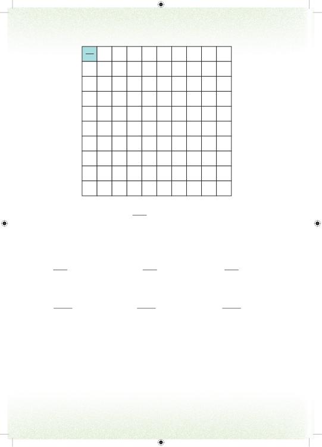

1100Sehemu iliyotiwa kivuli ni ya umbo zima na huandikwa 0.01. Namba 0.01 inapatikana kwa kugawanya 1 kwa 100. Desimali nyingine zinaweza kupatikana kutoka kwenye mchoro kwa mfano; (a)=0.03(b)=0.12(c)=0.94Mfano wa namba zenye nafasi za desimali zaidi ya mbili ni: (a) =0.002(b) =0.014(c) =0.127Namba zenye nafasi za desimali zaidi ya moja husomwa kuanzia kushoto kuelekea kulia. Tarakimu zilizopo kushoto mwa nukta ya desimali husomwa kama namba nzima. Tarakimu za kulia mwa nukta husomwa moja moja. Kwa mfano;